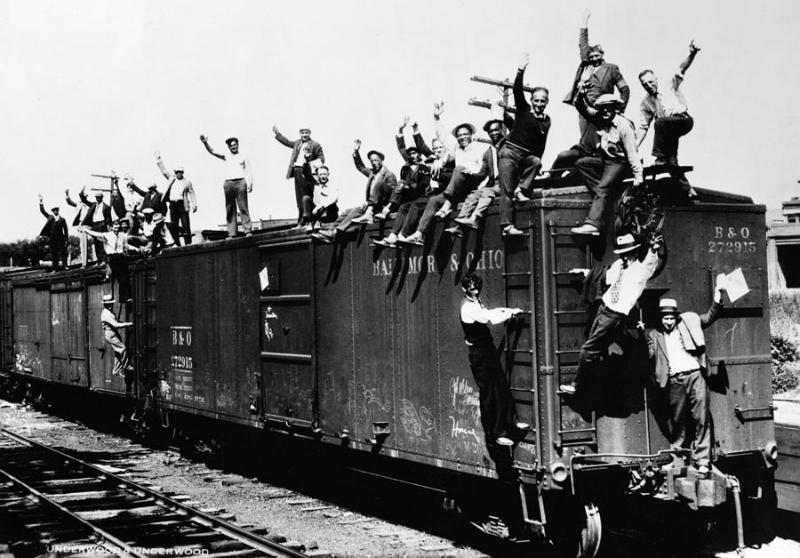

By Keelin
In the 1930’s people would ride the rails because they would get kicked out of their homes because their parents couldn't
afford to feed them or raise them properly with good shelter, since they were living through the Great Depression.
My advice to give the people who ride the rails would be for them to go back to school since they’re young enough
to continue their education so that they will be able to eventually get a job. Once they get a job they could
be able to afford food and a home and live a better life. Overall, my advice for the thousands of people who
would ride the rails is that they should try to turn their lives around by going back to school and become more
educated, so that they can try to have a better future. This way they can at least try to change their lives
in a positive way and become happier and live the life they always wanted.
